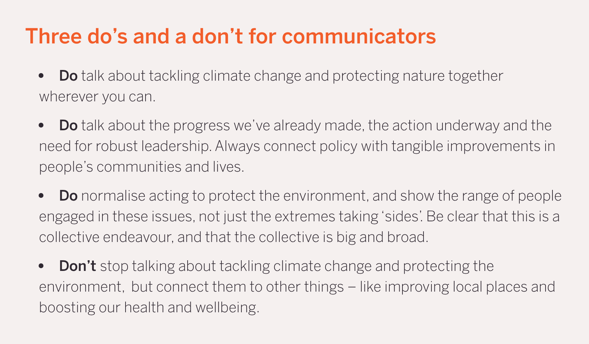
The format we've adapted. Climate Outreach, Britain Talks Climate and Nature 2025. Captured 7 November 2026.
https://climateoutreach.org/btc/2025/toolkit/toolkit-climate-change-and-nature/
Heading and four bullets.
How to communicate about AI safety, November 2026. 18 done, 6 removed from the article. Click an image to open it full size.

The format we've adapted. Climate Outreach, Britain Talks Climate and Nature 2025. Captured 7 November 2026.
https://climateoutreach.org/btc/2025/toolkit/toolkit-climate-change-and-nature/
Heading and four bullets.
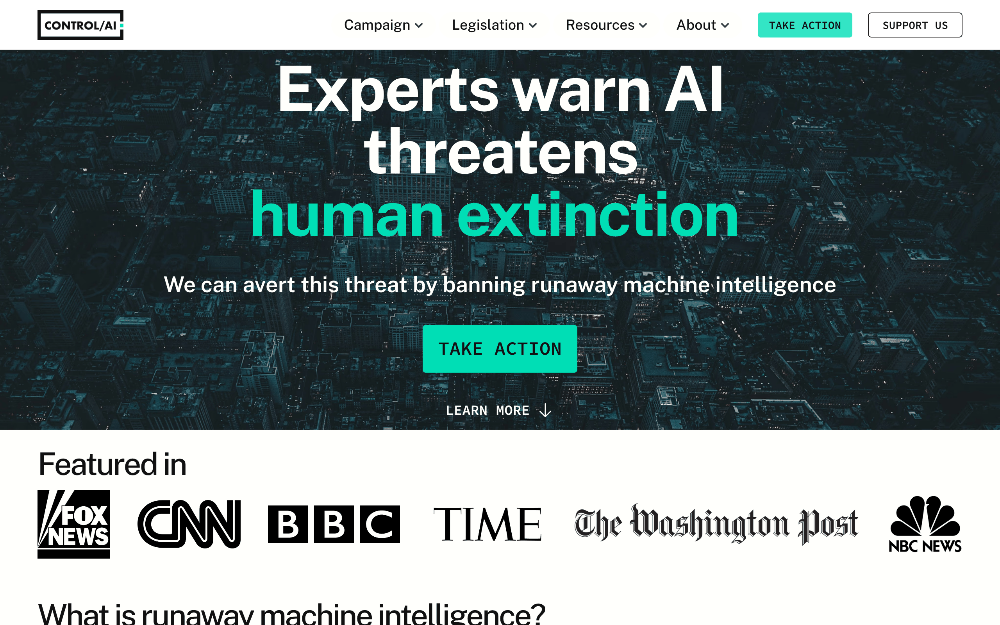
Threat and remedy, side by side. ControlAI. Captured 7 November 2026.
First screen at 1280x800 after choosing 'Only necessary' on the cookie banner. Over the 500KB target (about 1.7MB after reducing to 256 colours) because of the full-bleed photo; getting under 500KB would mean 1x resolution or JPEG. Cookie banner: clicked "Only necessary".
One action, three steps, and a counter showing how many have taken it. ControlAI.
The opening section sits beside a wall of more than 100 photographs of identifiable lawmakers, so the capture was discarded. A photo-free crop of only the left column (heading, '205+ lawmakers support our campaign' and the participation bar) is possible if you want it. The live counter read 10,785 of 20,000 on capture; the article says 10,556.
ControlAI drafts the message; the citizen reviews, signs and sends.
Left for Ben per the brief: needs an address typed in.
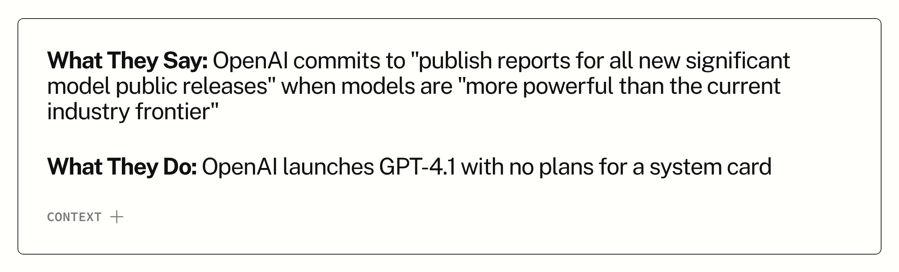
What they say, what they do. ControlAI. Captured 7 November 2026.
https://controlai.org/artificial-guarantees
The single say-and-do card for GPT-4.1.
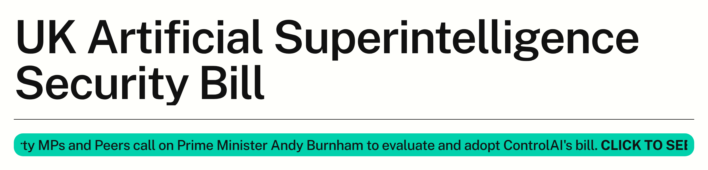
A coalition made visible: the bill and the letter backing it. ControlAI. Captured 7 November 2026.
https://controlai.org/uk-asi-bill
Title, rule and the scrolling ticker under it. The ticker is animated, so its text is caught mid-scroll and cut at the left edge. Cookie banner: clicked "Only necessary".
ControlAI's 2023 to 2024 deepfakes campaign. ControlAI.
https://controlai.org/past-campaigns/campaign-against-deepfakes
Capture discarded: the requested span (headline down to the 64 legislators line) includes the page's hero image, a large photographic face partly broken into pixels. It may be a stock or generated image, but I couldn't confirm the person isn't identifiable. A crop of the headline plus the Achievements paragraph, without the hero, is an alternative.
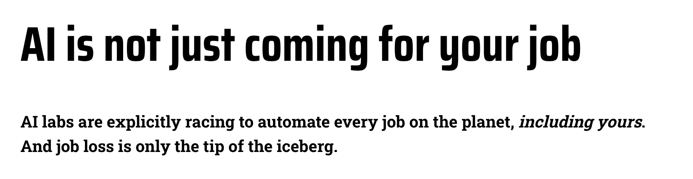
PauseAI's 2026 campaign starts with jobs and ends with loss of control. PauseAI, CC BY 4.0. Captured 7 November 2026.
https://pauseai.info/ai-not-just-coming-for-your-job
Title and opening paragraph.
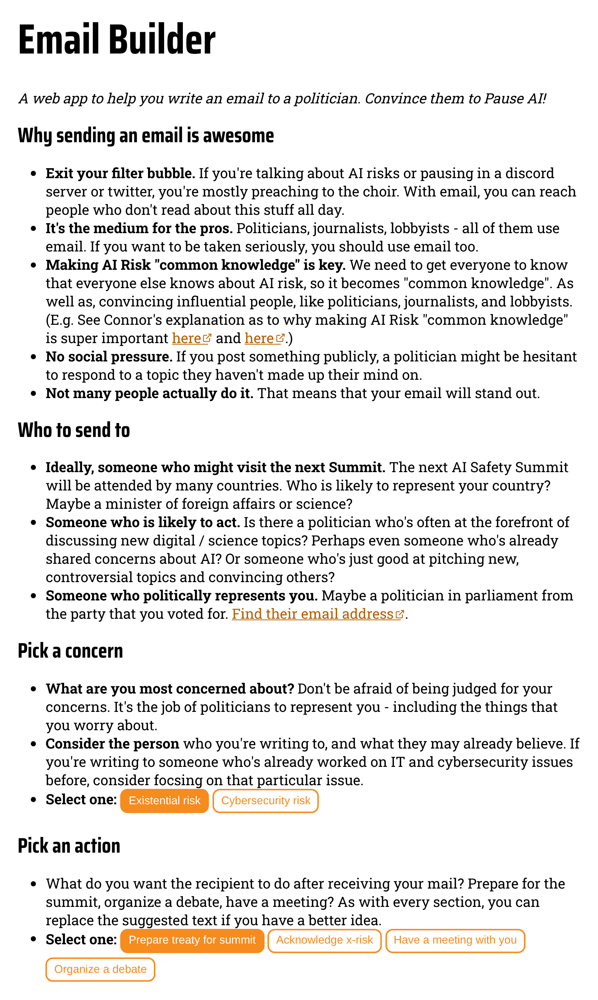
PauseAI's email builder. PauseAI, CC BY 4.0. Captured 7 November 2026.
https://pauseai.info/email-builder
Heading and the empty form; nothing typed or submitted.
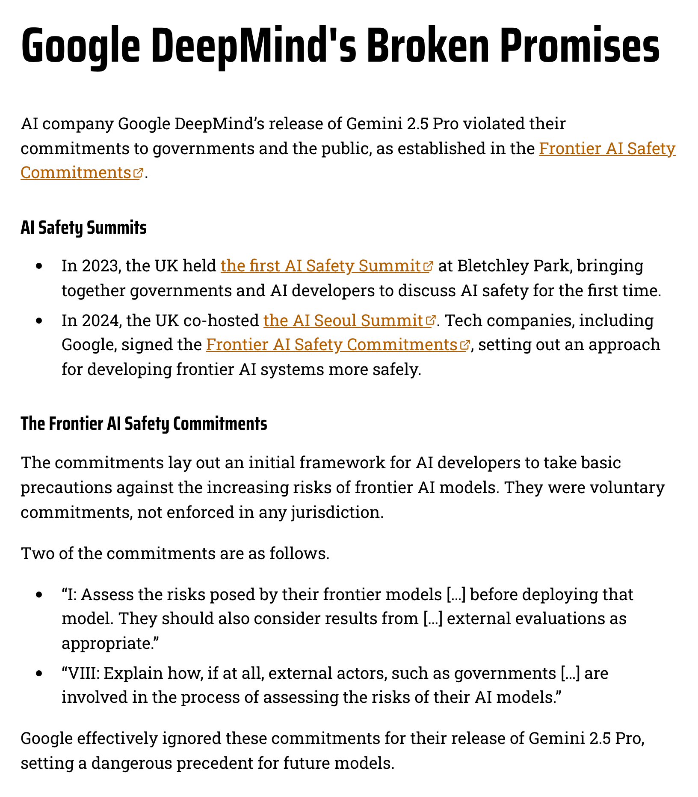
One company, one promise, one ask. PauseAI, CC BY 4.0. Captured 7 November 2026.
https://pauseai.info/google-deepmind-broken-promises
Title and the opening section up to the first subheading.
PauseAI outside Google DeepMind, London, June 2025. Photo: PauseAI.
https://pauseai.substack.com/p/we-held-the-largest-ai-safety-protest
Left for Ben per the brief: photo of people.
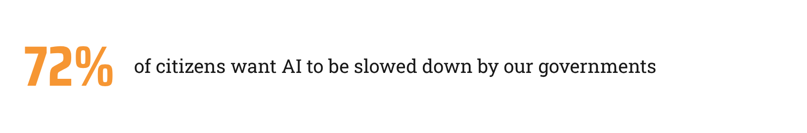
A 2023 US figure, shown without its date or country. PauseAI. Captured 7 November 2026.
Waited for the animated counter to reach 72%.
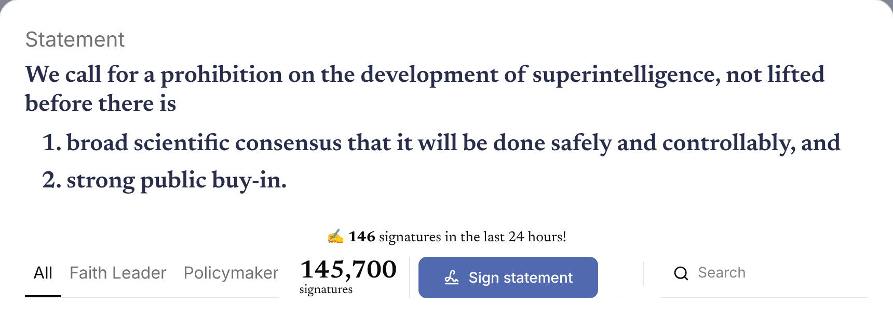
A running count makes the collective visible. Future of Life Institute. Captured 7 November 2026.
https://superintelligence-statement.org/
Statement and the signature row; no signatory photos. Count read 145,700 on capture (including 72,360 from Ekō's petition); the article says 78,199.
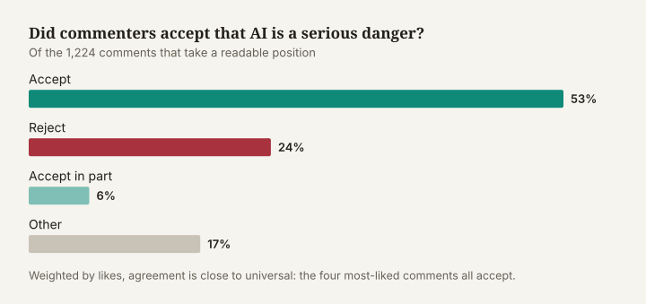
Most commenters on the Soares reel accepted that AI is a serious danger: 53% accepted the argument and 24% rejected it. Common Signals. Captured 7 November 2026.
assets/chart-stance.svg (ai-risk-reel-analysis-nate-soares-miri.html)
No stance-by-emotion chart exists in the Soares article, so this is its main chart (stance). The placeholder caption mentions emotion and no longer matches. Alternatives: assets/chart-funnel.svg (what was coded), assets/chart-top-comments.svg (most-liked comments, coloured by stance). The emotion coding exists in data/studies/soares-reel-2026-08/comments.csv (2,136 rows; anger 292, fear 251, resignation 171), so a stance-by-emotion chart could be drawn with scripts/housecharts.py if you want the caption kept.
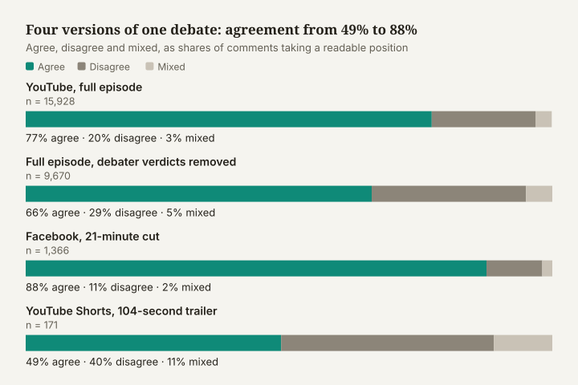
Agreement with the risk case under four cuts of one debate. Common Signals. Captured 7 November 2026.
cant-we-just-unplug-it-doac-ai-debate-comment-analysis.html (inline SVG, first chart)
Exact match: 'Four versions of one debate: agreement from 49% to 88%'.
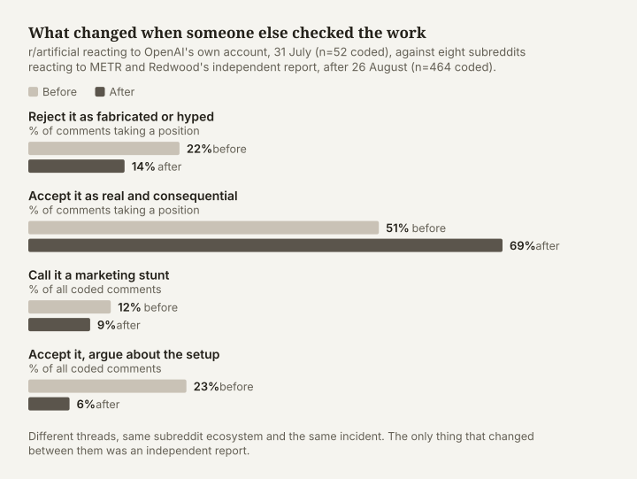
Same story, independently confirmed: acceptance rose from 51% to 69%. Common Signals. Captured 7 November 2026.
assets/mchart-lead-before-after.svg (openai-and-shut-metr-hugging-face.html)
Exact match: 'What changed when someone else checked the work'.
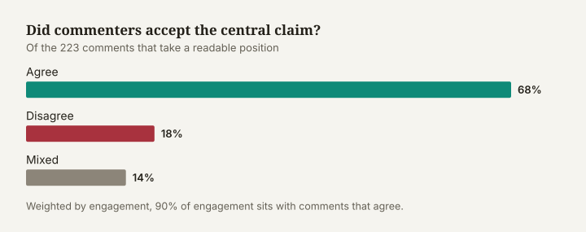
Under the accountability version of the story, most commenters agreed with Khlaaf: 68% agreed and 18% disagreed. Common Signals. Captured 7 November 2026.
assets/chart-amanpour-stance.svg (problem-they-created-rogue-ai-agents-openai-huggingface-amanpour-khlaaf.html)
No emotional-register chart exists in the Amanpour article, so this is its main chart (stance). The placeholder caption ('anger outnumbered fear') does not describe it. Alternatives: assets/chart-amanpour-frames.svg (comments v likes by frame, which carries the 23% of comments / 56% of likes blame finding), assets/chart-amanpour-stance-by-frame.svg, assets/chart-amanpour-top-comments.svg, assets/chart-amanpour-funnel.svg. The caption is supported by the data (emotion coding in data/studies/amanpour-segment-2026-09/comments.csv: anger 84, fear 41 of 322), so an emotion chart could be drawn with scripts/housecharts.py instead.
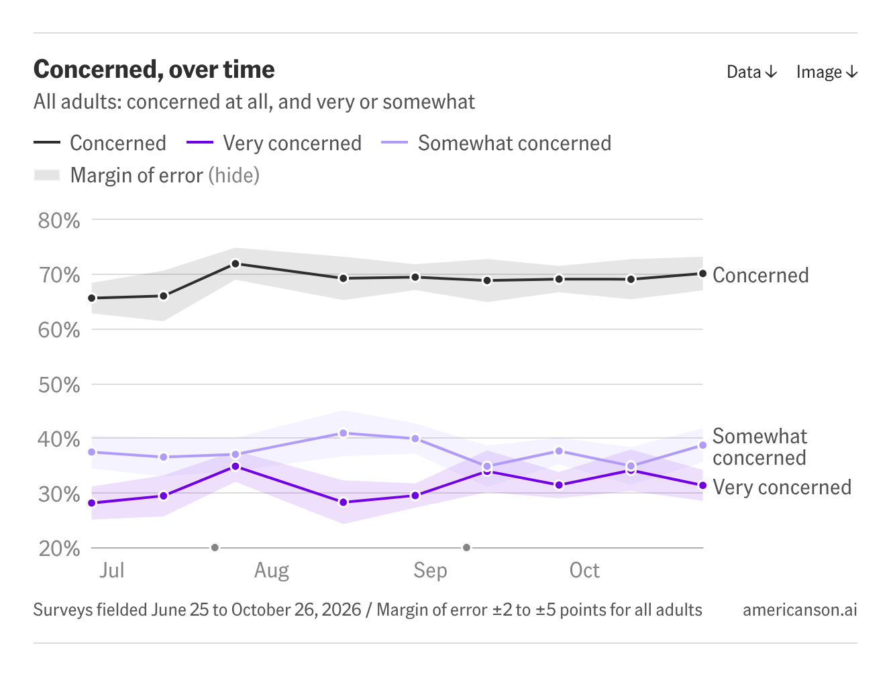
Concern about AI among US adults, June to October 2026. Americans on AI, CC BY 4.0. Captured 7 November 2026.
Whole chart card: title, chart, note and source line. Waited for the chart SVG to render.
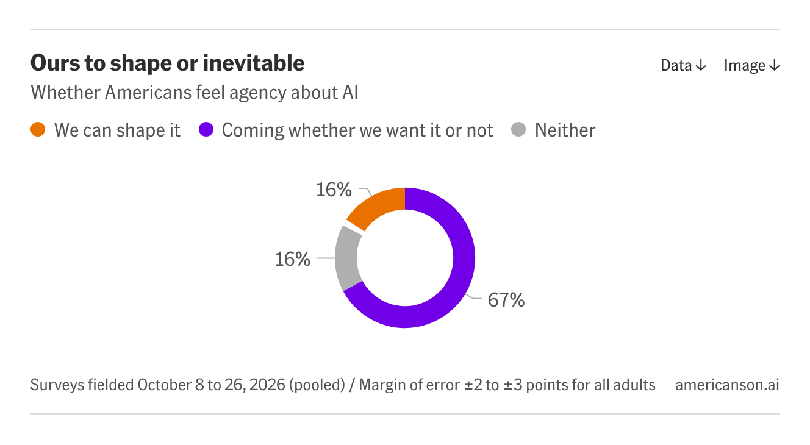
Two in three Americans say AI is coming into their lives whether they want it or not. Americans on AI, CC BY 4.0. Captured 7 November 2026.
Whole chart card. Waited for the chart SVG to render.
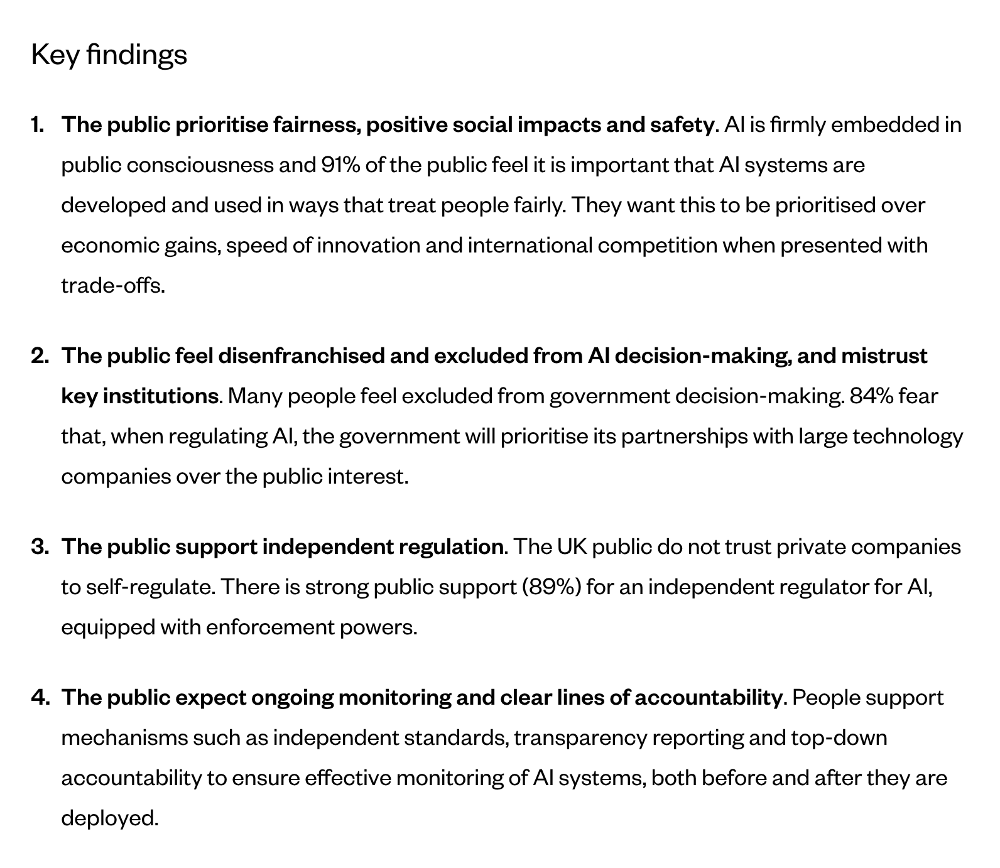
UK attitudes to AI regulation, September 2025. Ada Lovelace Institute. Captured 7 November 2026.
https://www.adalovelaceinstitute.org/policy-briefing/great-expectations/
'Key findings' heading and the list under it.
Unusual allies made the news. Fortune, October 2025.
Left for Ben per the brief: headline page with photos of people.
The sandwich-shop line carried the coverage. Business Insider, June 2025.
Left for Ben per the brief: headline page with photos of people.
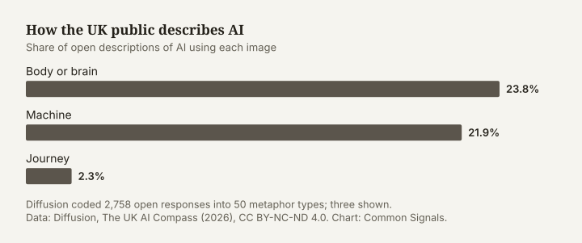
How the UK public describes AI. Data: Diffusion, The UK AI Compass (2026), CC BY-NC-ND 4.0. Chart: Common Signals. Captured 7 November 2026.
Diffusion, The UK AI Compass (2026); drawn with scripts/housecharts.py
Built from the figures in the article's CHART comment, in the house funnel style. A 360px mobile SVG is also saved.
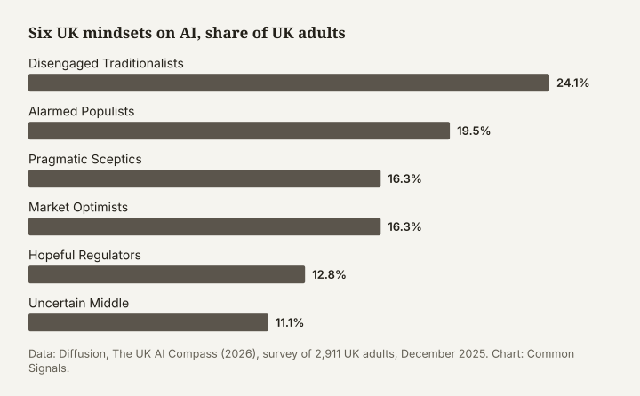
Six UK mindsets on AI, share of UK adults. Data: Diffusion, The UK AI Compass (2026). Chart: Common Signals. Captured 7 November 2026.
Diffusion, The UK AI Compass (2026); drawn with scripts/housecharts.py
Built from the figures in the article's CHART comment, in the house funnel style. A 360px mobile SVG is also saved.